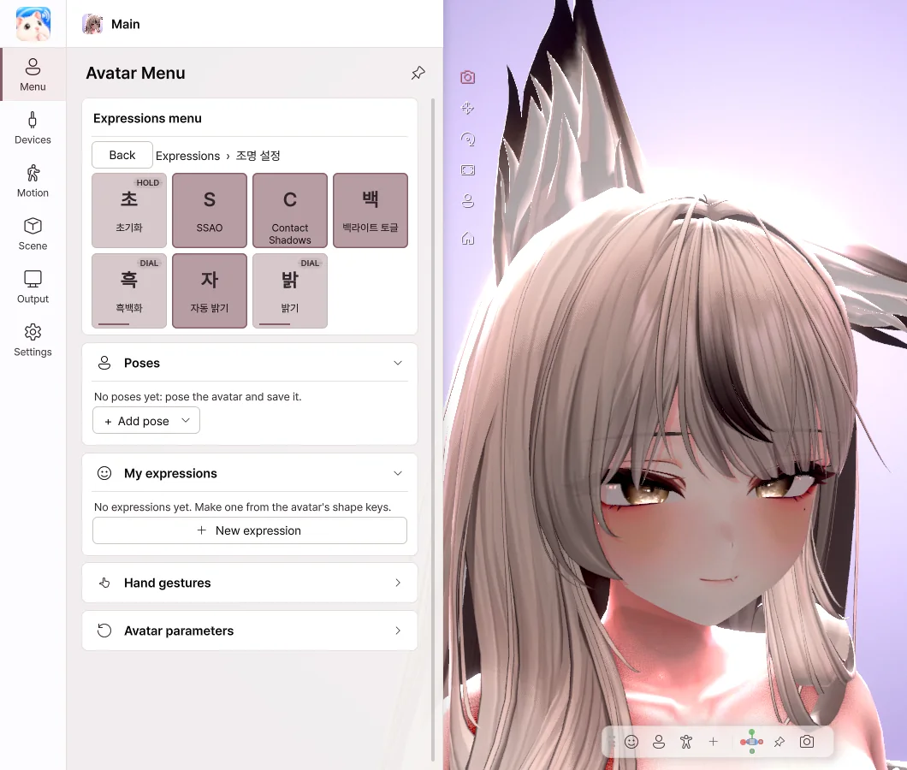

5. Avatar menu#
On the Menu page you use the avatar's own Expressions menu, just as in VRChat. Outfit and hair toggles, expression buttons, Radials and Puppets work the same way as in VRChat.
Expressions menu#

| Type | What it does |
|---|---|
| Toggle | On / off |
| Button | On while held |
| Sub Menu | Open a submenu (Back to return) |
| Radial Puppet | Set a value with a slider |
| Two Axis / Four Axis Puppet | Set a direction with a pad |
Right-clicking an item#
| Item | What it does |
|---|---|
| Add to Quick Actions | Turn this item into a toolbar button |
| Set hotkey… | Assign a hotkey to this item |
| Favorite | Add it to the favorites above the menu |
| Parameter info | Show this item's parameter |
Favorites#
Use favorited items directly at the top of the menu. Items inside submenus can also be used right there.
Hand gestures#
Pick a left / right hand gesture (Neutral · Fist · Open · Point · Victory · Rock · Gun · Thumbs) to show the avatar's gesture expressions.
- Gestures from the webcam's hands — when on, the hand shapes tracked by the webcam become gestures.
Avatar parameters#
- Reset to defaults — returns every menu value to the avatar's default (the same as Reset Avatar in VRChat).
Values that VRChat saves, such as outfit state, are kept the next time you run Avatar Live.
Quick Actions#
Turn actions you use often into buttons or keys.
Where to add them - Right-click a menu item → Add to Quick Actions - Settings › Hotkeys · Quick Actions › Add Quick Action
Actions you can use: avatar menu item · gesture · camera view · saved view · tracking reset · lighting preset · PhysBone reset · reset all
Right-click a button: Rename · Show in (Top HUD / Bottom toolbar / Hotkey only) · Set hotkey… · Remove
Reset and Reset everything#
| Reset | Reset everything | |
|---|---|---|
| How | Click ⟲ at the top, Settings › General | Right-click ⟲, Settings › General |
| What it resets | Tracking, hand pose, held buttons, PhysBones, Contacts | The above + all parameters (including outfits), avatar position and size, pose, camera |
| What it keeps | Outfits and toggles, lighting, camera | Objects, saved poses and expressions, settings |
If the avatar freezes or its hair gets tangled during a stream, click ⟲ Reset.